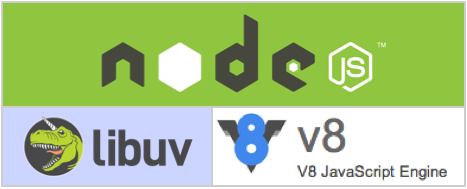
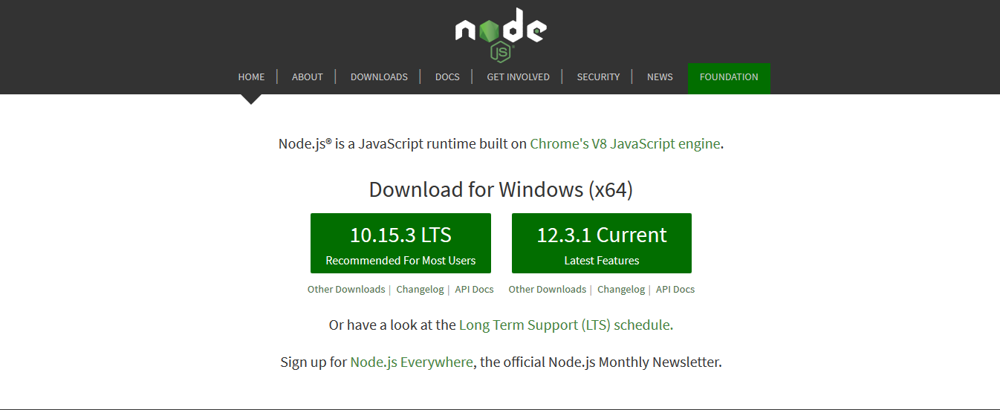
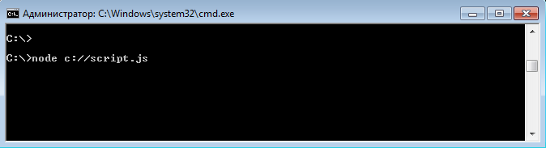
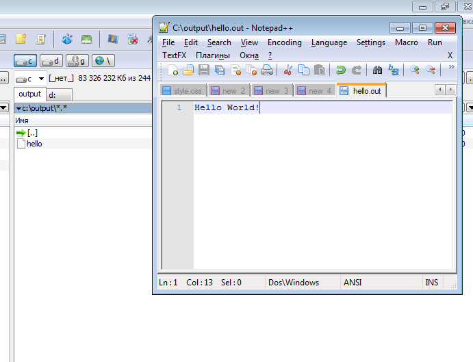

Created by Dmitry Serediuk
QUESTIONS:
WHAT IS NODE.JS?
Node.js is an open-source, cross-platform JavaScript run-time environment that executes JavaScript code outside of a browser.
ARCHITECTURE OF NODE.JS:
- Chrome V8, is an open-source JavaScript engine developed for Google Chrome.
- libuv (Unicorn Velociraptor Library) is a multi-platform library for asynchronous I/O based on event loops.
A PIECE OF HISTORY:
Ryan Dahl: creator of Node.JS
- Nov 2009, presentation of Node.JS
- Jan 2010, presentation of NPM
- Jul 2011, support of Windows
- Dec 2014, Node.JS = io.js + Node.JS
- Sep 2015, io.js + Node.JS = Node.JS
WHY NODE.JS IS POPULAR?
- Runs JS code.
- Works with files.
- Works with databases.
- Easy to start.
- Flexible.
- Many types of applications.
- Big community.
WHO USE IT?
- Microsoft
- IBM
- Yahoo
- PayPal
- Netflix
- SAP
- etc...
HOW TO INSTALL?

- Go to nodejs.org
- Download application
- Install application
FIRST APPLICATION:
console.log('Hello World!');
UPDATED APPLICATION:
const fs = require('fs');
fs.writeFile("/hello.out", "Hello World!", function(err) {
if(err) {
return console.log(err);
}
});
RUN IT:
OUTPUT:
TRY IT YOURSELF: